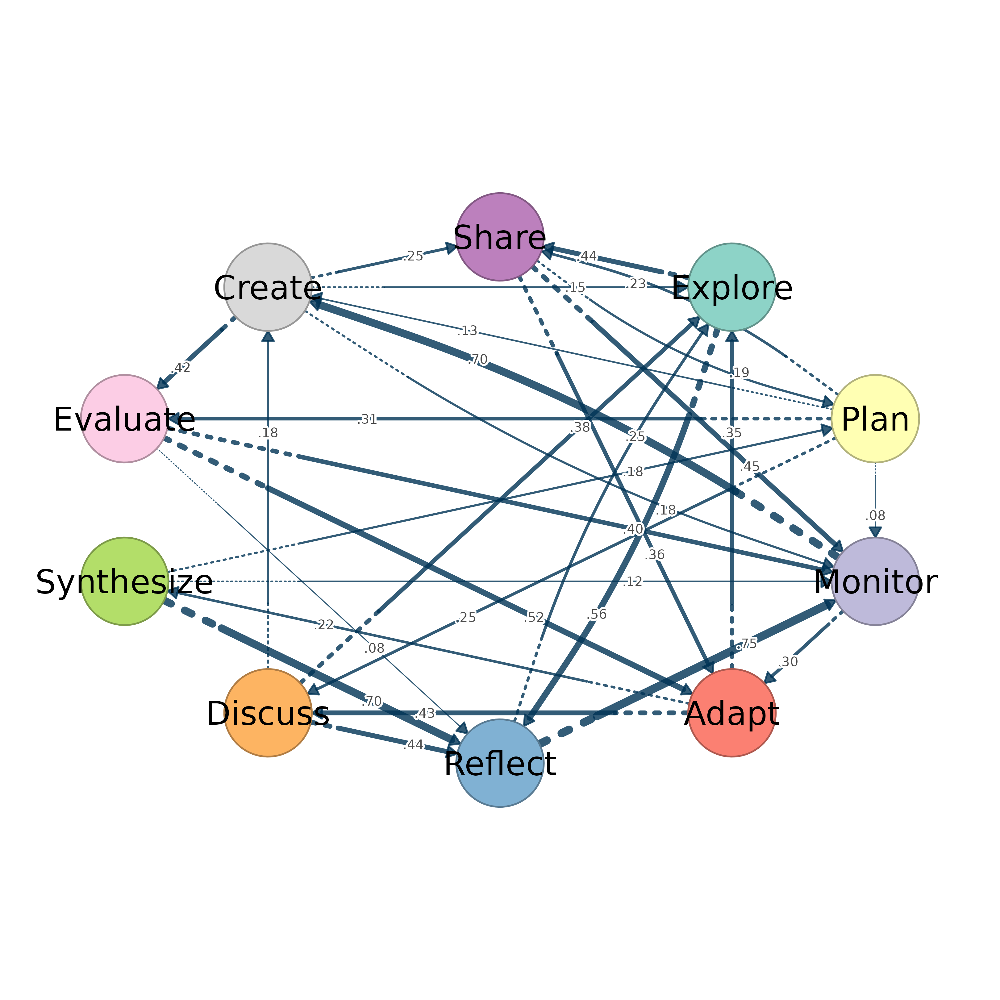

Extracts the transition matrix, labels, and initial state probabilities
from a tna object and plots the network with a cograph engine.
Initial probabilities are mapped to donut fills.
Usage
from_tna(
tna_object,
engine = c("splot", "soplot"),
plot = TRUE,
weight_digits = NULL,
show_zero_edges = FALSE,
...
)Arguments
- tna_object
A
tnaobject fromtna::tna()- engine
Which cograph renderer to use:
"splot"or"soplot". Default:"splot".- plot
Logical. If TRUE (default), immediately plot using the chosen engine.
- weight_digits
Number of decimal places to round edge weights to. Default
NULL, which picks the number of digits from the matrix:0when every non-zero weight is a whole number (counts, as inftna/ctnamodels) and2otherwise (probabilities). Edges whose weight rounds to zero at this precision are dropped unlessshow_zero_edges = TRUE.- show_zero_edges
Logical. A zero weight means that the edge is absent, so an edge whose weight rounds to zero at
weight_digitsis dropped. WithTRUEeach such edge is plotted at the smallest magnitude thatweight_digitscan express, with its original sign. Other weights are unchanged. Default:FALSE.- ...
Additional parameters passed to the plotting engine (e.g.,
layout,node_fill,donut_color).
Value
Invisibly, a named list of plotting parameters (the weight matrix
x, labels, directed, the donut settings and the
visual defaults above, after the overrides in ...). It can be
passed to splot() with do.call(). An input that is not a
tna object raises an error.
Details
Conversion Process
The transition matrix (weights) supplies the edge weights, the state
labels (labels) supply the node labels, and the initial state
probabilities (inits) supply the donut_fill values. The
donuts are plotted with donut_inner_ratio = 0.8.
Directedness is read from the tna object when it is recorded there. Otherwise a symmetric matrix is treated as undirected and an asymmetric matrix as directed.
TNA Visual Defaults
The following defaults are applied. Each can be overridden through
....
layout = "oval".node_fill: the RColorBrewer Accent palette for up to 8 states, Set3 for 9 to 12 states, and a qualitative HCL palette for more.node_size = 7.edge_color = "#003355".edge_labels = TRUE, withedge_label_size = 0.4andedge_label_position = 0.7.edge_label_style = "estimate"andedge_label_leading_zero = FALSE, so a label shows the weight alone without a leading zero (for example.42).minimum = 0.01, so transitions weaker than 0.01 are not plotted.For directed networks,
arrow_size = 0.61,edge_start_style = "dotted"andedge_start_length = 0.2(the first 20 percent of each edge is dotted).
See also
cograph for creating networks from scratch,
splot and soplot for plotting engines,
from_qgraph for qgraph object conversion
Examples
from_tna(tna::tna(regulation_net))
